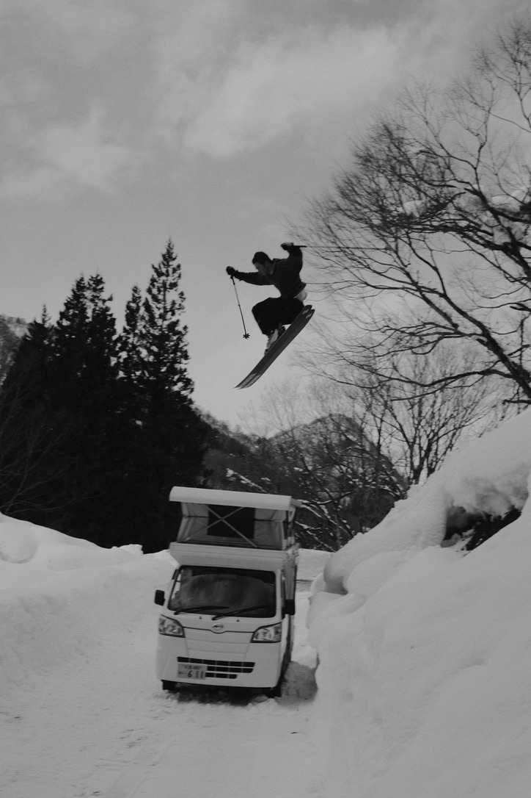
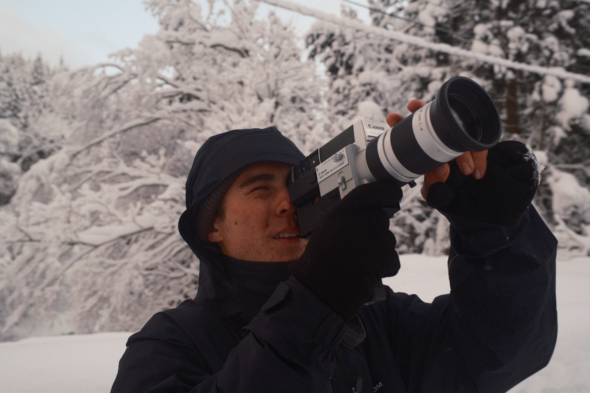

ABOUT
Olin Silverman is a filmmaker and photographer working across documentary, still photography, and moving image. Olin finds inspiration in the creative nature of making images, and finds himself happy to be doing so, regardless of the subject at hand.

